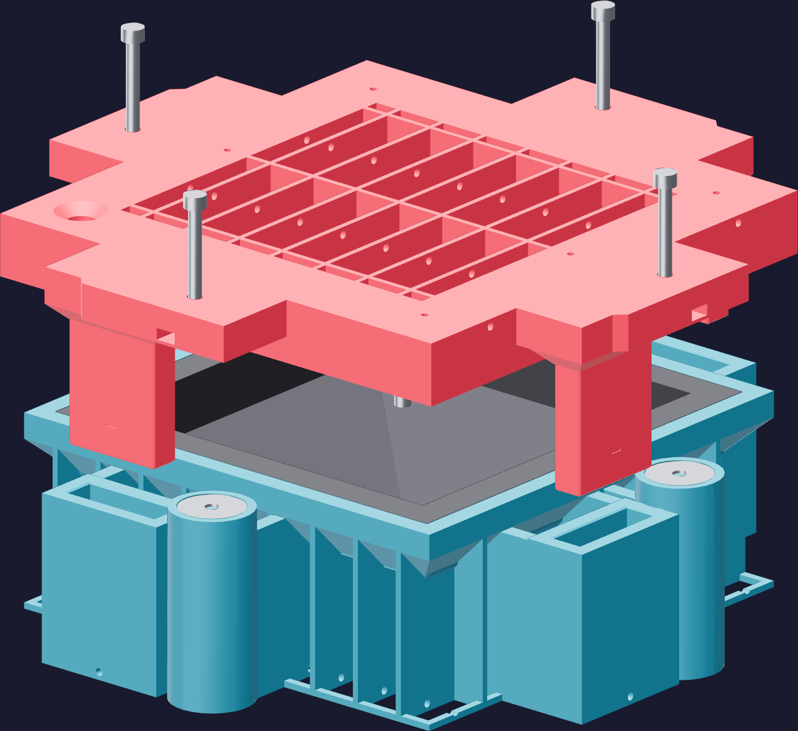
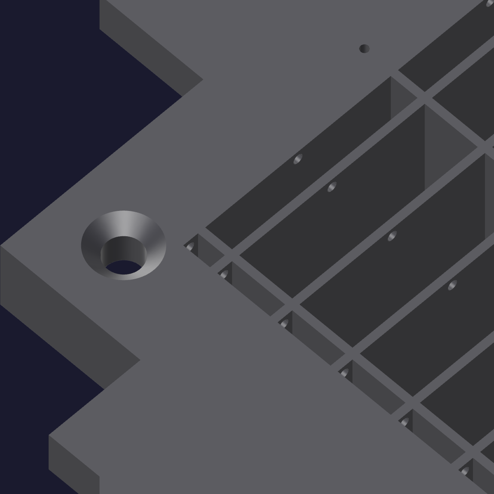

Working time8
Lower the core
Slowly, straight down, and let the silicone find its own way out. Six ports in the brim are the only exits, and everything that leaves through them is air you are not casting in.

- Start it on the guides. The four chamfered blades enter their bearings before the plug enters the cavity, so the core arrives square. Let it find them; do not push it sideways.
- Go down slowly and evenly. The plug displaces the silicone ahead of itself; give it time to move rather than forcing a pressure wave through the spout.
- Watch the ports. Air first, then silicone. A vent that never weeps is a vent that is blocked, or a corner that has not filled.
- Seat the skirt fully — 10 mm of registration all round, down flat, no rock.
- Top up the dish. Keep the casting full through the pour throat.

⛔ The jacks are not clamps
Their tips must still be clear of the washers with the core seated. If a screw is bearing
now, it is holding the mold open.